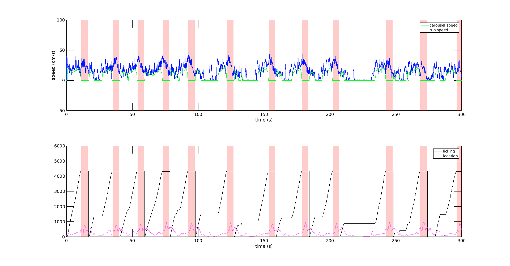
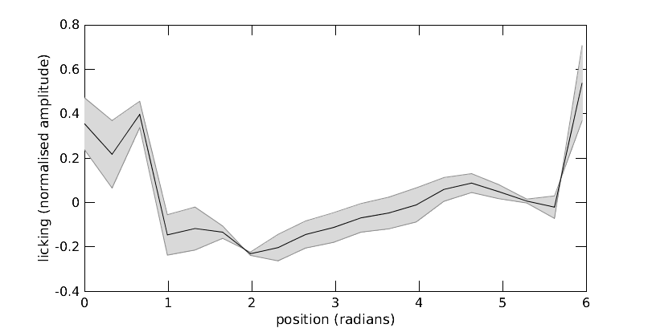
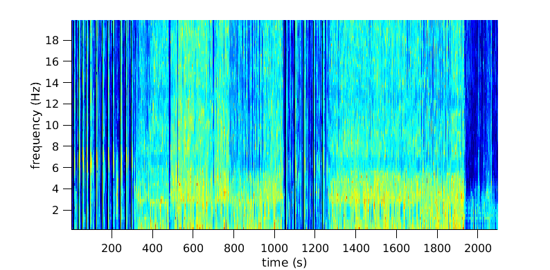
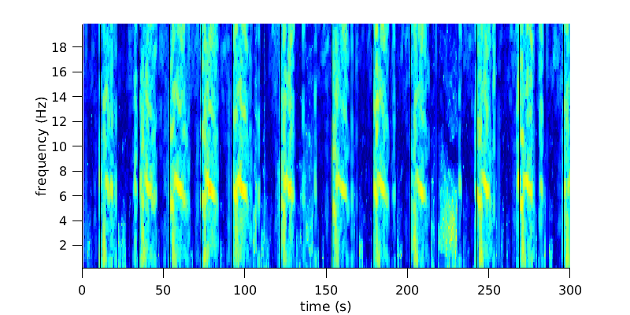
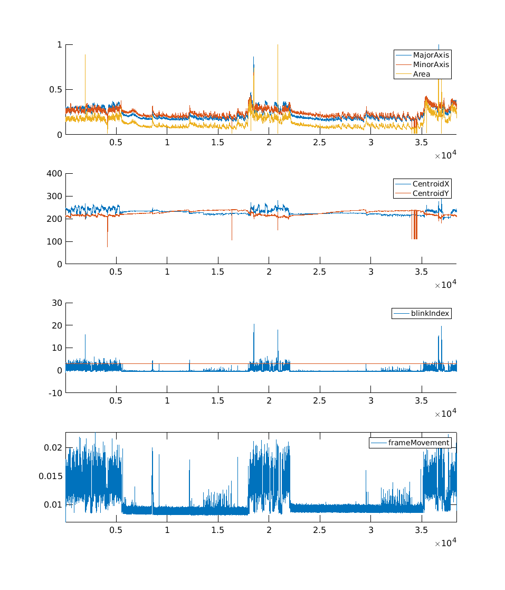
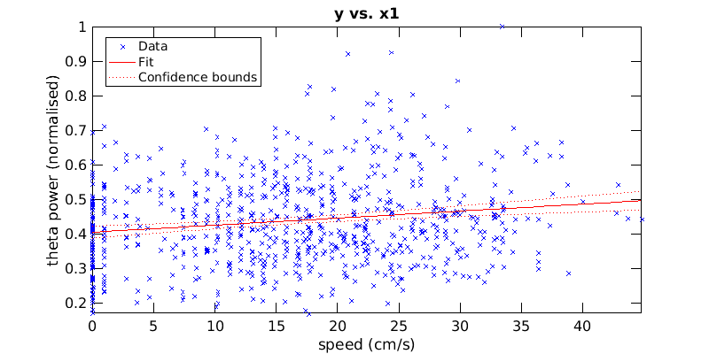
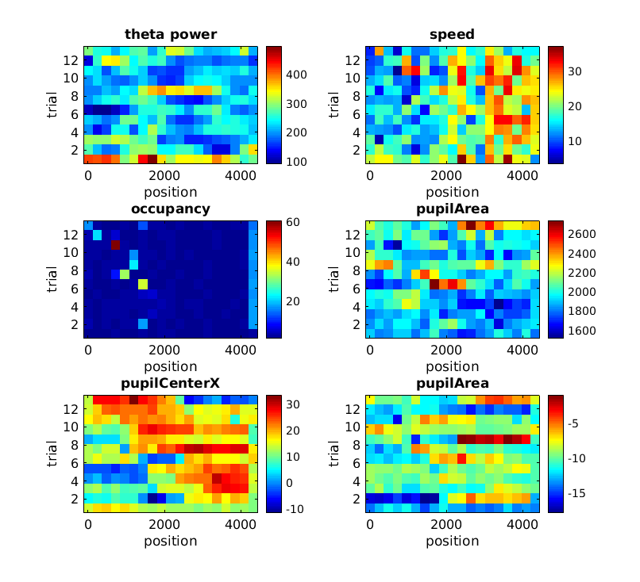

Contents
- EXAMPLE PIPELINE
- GET DATA %%%%%%%%%%%%%%%%%%%%%%%%%%%%%%%%%%%%%%%%%%%%%%%%%%%%%%%%%%%%%%%
- VISUALISE PERIPHERAL CHANNELS %%%%%%%%%%%%%%%%%%%%%%%%%%%%%%%%%%%%%%%%%%
- LOCATION vs LICKING %%%%%%%%%%%%%%%%%%%%%%%%%%%%%%%%%%%%%%%%%%%%%%%%%%%%
- LICKING SPECTROGRAM %%%%%%%%%%%%%%%%%%%%%%%%%%%%%%%%%%%%%%%%%%%%%%%%%%%%
- PUPIL SIZE %%%%%%%%%%%%%%%%%%%%%%%%%%%%%%%%%%%%%%%%%%%%%%%%%%%%%%%%%%%%%
- WHISKER TRACKING %%%%%%%%%%%%%%%%%%%%%%%%%%%%%%%%%%%%%%%%%%%%%%%%%%%%%%%
- SPECTROGRAMS FOR THETA, GAMMA, RIPPLES AND UNIVERSAL %%%%%%%%%%%%%%%%%%%
- 2D heat maps x-axis:position, y-axis:trials, color:(occupancy,theta power, speed, pupil size, pupil positionX, pupil positionY)
- VAR - dont run
- WRAP COLORMAP ON ITSELF
EXAMPLE PIPELINE
% could get multiple folders from a text file for example % lets work with one folder for now % we are assuming that all folders of interest have already been processed % to generate lfp and dat files batchDataConversion.m and convertData.m % nothing is done on units for now
GET DATA %%%%%%%%%%%%%%%%%%%%%%%%%%%%%%%%%%%%%%%%%%%%%%%%%%%%%%%%%%%%%%%
fldr = 'NP3_2018-04-11_19-37-06'; processedPath = getfullpath(fldr); % folder to keep processed data figs etc % get all channels into workspace [data,settings,tScale] = getLFP(fldr); if size(data,1) < 40 runCh = 35; lickCh = 36; carouselCh = 37; rewardCh = 38; else runCh = 67; lickCh = 68; carouselCh = 69; rewardCh = 70; end % get 30kHz data for analog channels since encoder pulses are missed from % the lfp-1jHz data [data30k,settings30k,tScale30k] = getDAT(fldr,[runCh, lickCh, carouselCh, rewardCh]); rewards = getRewards(data30k(4,:)); % REWARD TIMEPOINTS - reward channel = 38 runSpeed = getRunSpeed(data30k(1,:)); % RUNNING SPEED carouselSpeed = getCarouselSpeed(data30k(3,:)); % CAROUSEL SPEED location = getLocation(data30k(3,:),rewards); % CAROUSEL LOCATION licks = getLicks(data(lickCh,:)); % LICKING AS A FUNCTION OF LOCATION
VISUALISE PERIPHERAL CHANNELS %%%%%%%%%%%%%%%%%%%%%%%%%%%%%%%%%%%%%%%%%%
ifPlot = 1; if ifPlot % close all; figure; hold all; % run and carousel speeds h(1) = subplot(211); plot(tScale,runSpeed,'color',[0 .1 1]); hold on; %h(1) = gca; plot(tScale,carouselSpeed,'color',[0 1 .1]); drawPatches(h(1), [tScale(rewards.soundIdx); tScale(rewards.consumeIdx(:,2))]'); Lh = findobj(gca,'Type','line'); legend(Lh,{'carousel speed','run speed'}); ylabel('speed (cm/s)'); xlabel('time (s)'); % licking and location h(2) = subplot(212); plot(tScale,location,'color','k'); hold on; % plot([0 max(tScale)],[4096 4096],'k'); plot(tScale,licks,'color',[1 0.1 1 0.5]); drawPatches(h(2), [tScale(rewards.soundIdx); tScale(rewards.consumeIdx(:,2))]'); Lh = findobj(gca,'Type','line'); legend(Lh,{'licking','location'}); linkaxes(h,'x'); xlim([0 300]); set(gcf,'Position',[65 152 1920 1003]); xlabel('time (s)'); end

LOCATION vs LICKING %%%%%%%%%%%%%%%%%%%%%%%%%%%%%%%%%%%%%%%%%%%%%%%%%%%%
only first 300 seconds since rest is sleep or non task
from = 1; to = find(tScale == 300); % [N,LocEdges,LicEdges,binLoc,binLic] = histcounts2(location,zscore(licks)'); % figure;imagesc(LocEdges,LicEdges,N',[0 500]);axis xy locEdges = linspace(0,max(location(from:to)),20); positionInd = discretize(location(from:to),locEdges); mlr = accumarray(positionInd',licks(from:to),[numel(locEdges),1],@mean); slr = accumarray(positionInd',licks(from:to),[numel(locEdges),1],@std); mlr = (mlr-mean(mlr))./(max(mlr)-min(mlr)); slr = (slr-mean(slr))./(max(slr)-min(slr)); locEdgesScaled = 2*pi*((locEdges - min(locEdges))./(max(locEdges)-min(locEdges))); figure; shadedErrorBar(locEdgesScaled(1:end-1), mlr(1:end-1), slr(1:end-1)./sqrt(sum(rewards.soundIdx*0.001<300))); xlabel('position (radians)'); ylabel('licking (normalised amplitude)');

LICKING SPECTROGRAM %%%%%%%%%%%%%%%%%%%%%%%%%%%%%%%%%%%%%%%%%%%%%%%%%%%%
clear options; options.defaults = 'theta'; out = specmt(data(lickCh,:),options); clear options; options.mode = 'spectrogram'; options.events = tScale(rewards.soundIdx); options.eventscolor = 'k'; figure('Name','licking spectrogram - all'); out1 = plot_spectra(out,1,options); hold on; delete(colorbar); xlabel('time (s)');ylabel('frequency (Hz)'); figure('Name','licking spectrogram - task'); out1 = plot_spectra(out,1,options); hold on; delete(colorbar); xlabel('time (s)');ylabel('frequency (Hz)'); xlim([0 300]);


PUPIL SIZE %%%%%%%%%%%%%%%%%%%%%%%%%%%%%%%%%%%%%%%%%%%%%%%%%%%%%%%%%%%%%
run pupil summary which will return nan if if finds no processed data is found. If not found then you must manually run the pupil detection functions
pupilH = pupilSummary(fldr); if exist('pupilH','var') load([processedPath,'pupilresults.mat']); end set(gcf,'pos',[1 64 957 1117]); frameTimes = linspace(tScale(1),tScale(end),numel(frameTimes));

WHISKER TRACKING %%%%%%%%%%%%%%%%%%%%%%%%%%%%%%%%%%%%%%%%%%%%%%%%%%%%%%%
not done prob won't bother with this
SPECTROGRAMS FOR THETA, GAMMA, RIPPLES AND UNIVERSAL %%%%%%%%%%%%%%%%%%%
general spectrograms for inspection theta_w=2s, gamma_w = 0.1s, ripple_w = 0.1, univresal_w = 2.5s
ifRun = 0; if ifRun specgramTypes = {'theta';'gamma';'ripples';'universal'}; [a,b] = numSubplots(size(data,1)); for i=1:length(specgramTypes) close all; figure(1); figure('Position',[-2632 40 2560 1287]); for ch = 1:size(data,1) clear options; options.defaults = specgramTypes{i}; out = specmt(data(ch,:),options); clear options; options.mode = 'spectrogram'; options.events = tSound; options.eventscolor = 'k'; figure(1); clf; out1 = plot_spectra(out,1,options); delete(colorbar); xlabel('');ylabel(''); h = get(gcf,'Children'); figure(2); ax = subplot(a(2),a(1),ch); axD = get(ax,'Position');delete(ax); tmph(ch) = copyobj(h,2); set(tmph(ch),'Position',axD); if ch ~= 1; axis off; end end figure(2); print([processedPath,'session_spgram_',specgramTypes{i}],'-djpeg','-r600'); close; % linkaxes(tmph,'x','y'); end end
2D heat maps x-axis:position, y-axis:trials, color:(occupancy,theta power, speed, pupil size, pupil positionX, pupil positionY)
estimate location at the times of the spectrograms pick one lfp channel and work on that for theta power
clear out; clear options; options.defaults = 'theta'; out = specmt(data(20,:),options); thetaP = mean(out.Sxy(:,(out.f>5 & out.f<12)),2); thetaP = thetaP(out.t<=300); locAtSpectrPoints = spline(tScale(tScale<=300),location(tScale<=300),out.t(out.t<=300)); % <300 is task positionInd = discretize(locAtSpectrPoints,locEdges); runSpeedAtSpectrPoints = spline(tScale(tScale<=300),runSpeed(tScale<=300),out.t(out.t<=300)); figure; mdl = fitlm(runSpeedAtSpectrPoints,normalize_array(thetaP)); plot(mdl); axis tight; xlabel('speed (cm/s)'); ylabel('theta power (normalised)'); % location,trials and theta power 2d heat map locEdges = linspace(0,max(locAtSpectrPoints),20); positionInd = discretize(locAtSpectrPoints,locEdges); tTmp = out.t(out.t<=300); trialInd = discretize(tTmp,[-inf,tScale(rewards.soundIdx(tScale(rewards.soundIdx)<=300)),inf]); % index time variable according to trials trialInd = trialInd(2:end-1); %-------------------------------------------------------------------------- figure('pos',[836 174 806 734]); % theta power as a function of location and trial subplot(321); clear lst mlr slr; lst = unique(trialInd); for i = 1:length(lst)-1 idx = find(trialInd == lst(i)); mlr(:,i) = accumarray(positionInd(idx),thetaP(idx),[numel(locEdges)-1,1],@mean); %slr(:,i) = accumarray(positionInd(idx),thetaP(idx),[numel(locEdges)-1,1],@std); end imagesc(locEdges',lst',mlr'); colorbar; axis xy;xlabel('position');ylabel('trial');title('theta power'); %-------------------------------------------------------------------------- % speed as a function of location and trial subplot(322); clear lst mlr slr; lst = unique(trialInd); for i = 1:length(lst)-1 idx = find(trialInd == lst(i)); mlr(:,i) = accumarray(positionInd(idx),runSpeedAtSpectrPoints(idx),[numel(locEdges)-1,1],@mean); %slr(:,i) = accumarray(positionInd(idx),runSpeedAtSpectrPoints(idx),[numel(locEdges)-1,1],@std); end imagesc(locEdges',lst',mlr'); colorbar; axis xy;xlabel('position');ylabel('trial');title('speed'); %-------------------------------------------------------------------------- % occupancy as a function of location and trial subplot(323); clear lst mlr slr; lst = unique(trialInd); for i = 1:length(lst)-1 idx = find(trialInd == lst(i)); mlr(:,i) = accumarray(positionInd(idx),positionInd(idx),[numel(locEdges)-1,1],@numel); %slr(:,i) = accumarray(positionInd(idx),runSpeedAtSpectrPoints(idx),[numel(locEdges)-1,1],@std); end imagesc(locEdges',lst',mlr'); colorbar; axis xy;xlabel('position');ylabel('trial');title('occupancy'); %-------------------------------------------------------------------------- % pupil area as a function of location and trial subplot(324); pupArea = [tracked.Area]; idx = find(frameTimes<=300); pupAtSpectrPoints = spline(frameTimes(idx),pupArea(idx),out.t(out.t<=300)); % <300 is task clear lst mlr slr; lst = unique(trialInd); for i = 1:length(lst)-1 idx = find(trialInd == lst(i)); mlr(:,i) = accumarray(positionInd(idx),pupAtSpectrPoints(idx),[numel(locEdges)-1,1],@mean); %slr(:,i) = accumarray(positionInd(idx),pupAtSpectrPoints(idx),[numel(locEdges)-1,1],@std); end imagesc(locEdges',lst',mlr'); colorbar; axis xy;xlabel('position');ylabel('trial');title('pupilArea'); %-------------------------------------------------------------------------- % pupil center X subplot(325); pupCentroid = [tracked.Centroid]; pupCentroidX = pupCentroid(1:2:end); pupCentroidY = pupCentroid(2:2:end); pupCentroidX = pupCentroidX - mean(pupCentroidX); pupCentroidY = pupCentroidY - mean(pupCentroidY); idx = find(frameTimes<=300); pupAtSpectrPoints = spline(frameTimes(idx),pupCentroidX(idx),out.t(out.t<=300)); % <300 is task clear lst mlr slr; lst = unique(trialInd); for i = 1:length(lst)-1 idx = find(trialInd == lst(i)); mlr(:,i) = accumarray(positionInd(idx),pupAtSpectrPoints(idx),[numel(locEdges)-1,1],@mean); %slr(:,i) = accumarray(positionInd(idx),pupAtSpectrPoints(idx),[numel(locEdges)-1,1],@std); end imagesc(locEdges',lst',mlr'); colorbar; axis xy;xlabel('position');ylabel('trial');title('pupilCenterX'); %-------------------------------------------------------------------------- % pupil center X subplot(326); pupCentroid = [tracked.Centroid]; pupCentroidX = pupCentroid(1:2:end); pupCentroidY = pupCentroid(2:2:end); pupCentroidX = pupCentroidX - mean(pupCentroidX); pupCentroidY = pupCentroidY - mean(pupCentroidY); idx = find(frameTimes<=300); pupAtSpectrPoints = spline(frameTimes(idx),pupCentroidY(idx),out.t(out.t<=300)); % <300 is task clear lst mlr slr; lst = unique(trialInd); for i = 1:length(lst)-1 idx = find(trialInd == lst(i)); mlr(:,i) = accumarray(positionInd(idx),pupAtSpectrPoints(idx),[numel(locEdges)-1,1],@mean); %slr(:,i) = accumarray(positionInd(idx),pupAtSpectrPoints(idx),[numel(locEdges)-1,1],@std); end imagesc(locEdges',lst',mlr'); colorbar; axis xy;xlabel('position');ylabel('trial');title('pupilArea');


VAR - dont run
ifdo = 0
if ifdo
WRAP COLORMAP ON ITSELF
jet_wrap = vertcat(jet,flipud(jet)); colormap(jet_wrap);
figure(1) subplot(3,1,1); hold on; cla plot(encoder) axis tight plot(locs, pks, 'r*') deltaTs = diff(locs); speed = 2*pi*Radius/600*100 ./ deltaTs ; % cm/s figure subplot(221) hist(speed,50)
end
ifdo =
0